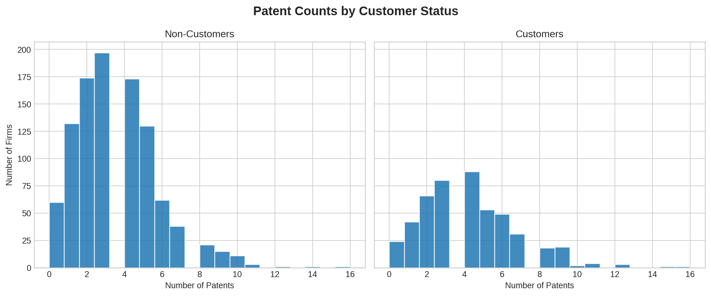
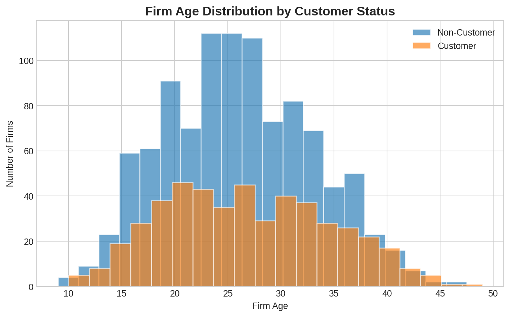
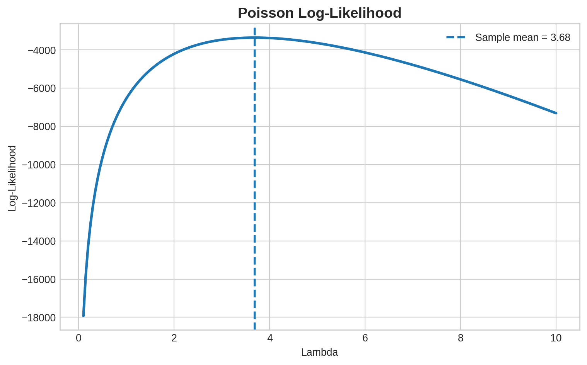
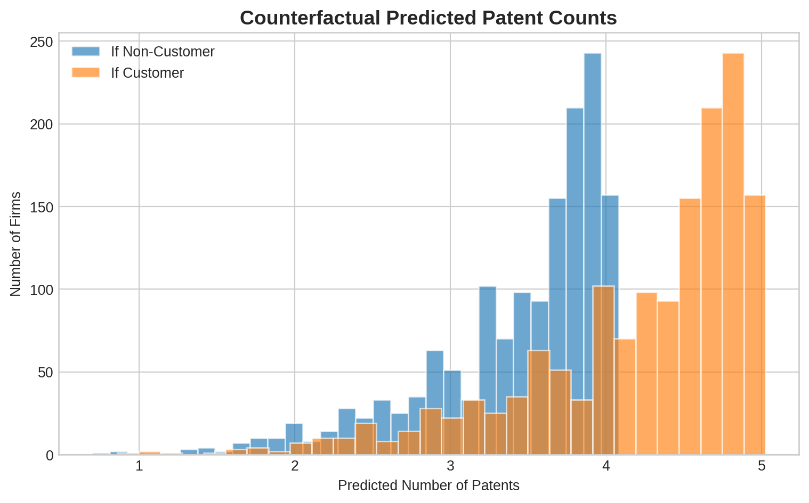

| Variable | Mean | Std. Dev. | Min | Max |
|---|---|---|---|---|
| Patents | 3.685 | 2.352 | 0.0 | 16.0 |
| Age | 26.358 | 7.243 | 9.0 | 49.0 |
| Customer Status | 0.321 | 0.467 | 0.0 | 1.0 |
Poisson Regression and Maximum Likelihood Estimation
A Case Study of Blueprinty’s Software and Patent Awards
Introduction
Blueprinty is a software company that develops tools to help engineering firms prepare patent applications. The company’s marketing team would like to claim that firms using their software are more successful in getting patents approved.
Ideally, we would compare each firm’s patent success before and after adopting Blueprinty’s software. However, such longitudinal data is not available. Instead, we observe cross-sectional data on 1,500 mature engineering firms, including their number of patents over the past five years, firm age, region, and whether they use Blueprinty’s software.
A key challenge in evaluating Blueprinty’s claim is that firms are not randomly assigned to use the software. Firms that choose to adopt Blueprinty may systematically differ from those that do not. For example, they may be older, larger, or located in more innovative regions. As a result, simple comparisons of patent counts may reflect underlying differences in firm characteristics rather than a causal effect of the software itself.
Exploring the Data
The dataset contains 1,500 firms and four variables: the number of patents, region, firm age, and customer status.
We begin by comparing the number of patents between Blueprinty customers and non-customers.
| Customer Status | Average Patents |
|---|---|
| Non-Customer | 3.473 |
| Customer | 4.133 |
The average number of patents for non-customers is approximately 3.47, while customers have a higher average of about 4.13 patents over the past five years. This suggests that firms using Blueprinty’s software tend to have more patents on average.

The histograms reinforce this pattern. The distribution for customers appears to be slightly shifted to the right, indicating a higher concentration of firms with larger patent counts. Customers also show a somewhat longer right tail, suggesting more high-performing firms among Blueprinty users.
However, this difference alone does not imply that Blueprinty’s software causes higher patent output. Firms are not randomly assigned to use the software, so this gap may reflect underlying differences in firm characteristics rather than a causal effect.
Next, we examine whether Blueprinty’s customers differ systematically from non-customers in terms of region and firm age.
| Region | Non-Customer Share | Customer Share |
|---|---|---|
| Midwest | 0.184 | 0.077 |
| Northeast | 0.268 | 0.682 |
| Northwest | 0.155 | 0.060 |
| South | 0.153 | 0.073 |
| Southwest | 0.240 | 0.108 |
The regional distribution reveals substantial differences between the two groups. A large majority of Blueprinty’s customers are located in the Northeast, whereas non-customers are more evenly distributed across regions. This suggests that Blueprinty’s customer base is geographically concentrated.
This matters because regional factors may influence innovation and patent activity. Certain regions may have stronger innovation ecosystems, better access to technical talent, or more supportive business environments. As a result, higher patent counts among customers could partly reflect regional advantages rather than the effect of Blueprinty’s software.
| Customer Status | Mean Age | Median Age | Std. Dev. |
|---|---|---|---|
| Non-Customer | 26.102 | 25.5 | 6.945 |
| Customer | 26.900 | 26.5 | 7.815 |

Customers have a slightly higher average age compared to non-customers, although the difference is modest. Firm age is important because more established firms may have greater experience, resources, and existing intellectual property pipelines, all of which can contribute to higher patent output.
Taken together, these differences highlight that Blueprinty’s customers are not a random sample of firms. Therefore, simple comparisons of patent counts may be biased, and we must control for these characteristics in a regression framework.
A Simple Poisson Model via Maximum Likelihood
Because the outcome variable, the number of patents, is a non-negative integer, the Poisson distribution provides a natural starting point for modeling. Unlike the Normal distribution, which allows negative and non-integer values, the Poisson distribution is designed for count data.
For a Poisson random variable, the probability mass function is:
\[ f(Y|\lambda) = \frac{e^{-\lambda}\lambda^Y}{Y!} \]
Assuming observations are independent and identically distributed, the likelihood function is:
\[ L(\lambda) = \prod_{i=1}^{n} \frac{e^{-\lambda}\lambda^{Y_i}}{Y_i!} \]
Taking logs gives:
\[ \ell(\lambda) = \sum_{i=1}^{n} \left(Y_i \log \lambda - \lambda - \log(Y_i!)\right) \]
The log-likelihood is easier to work with because it turns a product into a sum while preserving the same maximum.
Code
Y = df["patents"].values
def poisson_loglikelihood(lam, Y):
if lam <= 0:
return -np.inf
return np.sum(Y * np.log(lam) - lam - gammaln(Y + 1))
The log-likelihood function reaches its maximum at approximately \(\lambda = 3.68\), which is also equal to the sample mean of the data. This is not a coincidence. In a Poisson model, the maximum likelihood estimator of \(\lambda\) is the sample mean.
To confirm this numerically, we can maximize the log-likelihood directly.
| Estimate | Value |
|---|---|
| Numerical MLE | 3.685 |
| Sample Mean | 3.685 |
The numerical MLE and sample mean are nearly identical, confirming the analytical result.
Poisson Regression
We now extend the simple Poisson model to allow the expected number of patents to vary across firms based on their characteristics:
\[ Y_i \sim \text{Poisson}(\lambda_i) \]
where:
\[ \lambda_i = \exp(X_i'\beta) \]
This specification ensures that the expected number of patents remains positive while allowing firm characteristics such as age, region, and customer status to influence patent output.
We include age and age squared because the relationship between firm age and patent output is unlikely to be perfectly linear. We also include region indicators, dropping one region to avoid perfect collinearity with the intercept.
The Poisson regression log-likelihood is:
\[ \ell(\beta) = \sum_{i=1}^{n} \left(Y_i X_i'\beta - \exp(X_i'\beta) - \log(Y_i!)\right) \]
Code
def poisson_regression_loglikelihood(beta, Y, X):
eta = X @ beta
lam = np.exp(eta)
return np.sum(Y * eta - lam - gammaln(Y + 1))| Variable | MLE Coefficient | MLE Std. Error |
|---|---|---|
| const | 0.0 | 1.0 |
| age | 0.0 | 1.0 |
| age2 | 0.0 | 1.0 |
| iscustomer | 0.0 | 1.0 |
| region_Northeast | 0.0 | 1.0 |
| region_Northwest | 0.0 | 1.0 |
| region_South | 0.0 | 1.0 |
| region_Southwest | 0.0 | 1.0 |
As a check, we fit the same model using statsmodels’ built-in GLM function.
| Variable | Coefficient | Std. Error | z-value | p-value | Significance |
|---|---|---|---|---|---|
| const | -0.509 | 0.183 | -2.778 | 0.005 | ** |
| age | 0.149 | 0.014 | 10.716 | 0.000 | *** |
| age2 | -0.003 | 0.000 | -11.513 | 0.000 | *** |
| iscustomer | 0.208 | 0.031 | 6.719 | 0.000 | *** |
| region_Northeast | 0.029 | 0.044 | 0.669 | 0.504 | |
| region_Northwest | -0.018 | 0.054 | -0.327 | 0.744 | |
| region_South | 0.057 | 0.053 | 1.074 | 0.283 | |
| region_Southwest | 0.051 | 0.047 | 1.072 | 0.284 |
The coefficient estimates from the hand-coded likelihood and the built-in GLM model match closely. The standard errors may differ slightly because the hand-coded version relies on a numerical approximation of the Hessian.
The regression results reveal several important patterns. First, the coefficient on firm age is positive, while the coefficient on age squared is negative. This indicates a concave relationship between firm age and patenting: patents increase with age, but at a decreasing rate. This pattern is economically intuitive, as firms accumulate experience over time but may eventually reach diminishing returns in innovation.
The customer coefficient is positive and statistically significant at conventional levels, indicating that Blueprinty customers have higher expected patent counts after controlling for firm age and region. In particular, the estimated coefficient implies that customer firms have approximately a 23% higher expected number of patents, holding other factors constant.
| Quantity | Value |
|---|---|
| Customer Coefficient | 0.208 |
| Percent Change in Expected Patents | 23.071 |
The regional coefficients are relatively small and not statistically significant, suggesting that once we control for other factors, regional differences do not strongly predict patent output in this dataset.
Overall, these results suggest that Blueprinty’s software is associated with higher patent output, even after accounting for observable firm characteristics.
The Effect of Blueprinty’s Software
While the regression coefficients suggest that Blueprinty’s software is associated with higher patent output, the log-linear nature of the Poisson model makes it difficult to interpret the results in terms of actual patent counts.
To provide a more intuitive interpretation, we construct two counterfactual scenarios:
- A dataset where all firms are treated as non-customers.
- A dataset where all firms are treated as customers.
Using the fitted model, we predict the expected number of patents for each firm under both scenarios.
| Scenario | Predicted Patents |
|---|---|
| All firms as non-customers | 3.436 |
| All firms as customers | 4.229 |
| Average effect of customer status | 0.793 |
The results show that the average predicted number of patents is approximately 3.44 if all firms were non-customers, compared to 4.23 if all firms were customers.
This implies that being a Blueprinty customer is associated with an increase of about 0.79 additional patents over a five-year period, holding firm age and region constant.

These findings are consistent with Blueprinty’s marketing claim that its software improves patent success. However, it is important to emphasize that this analysis is based on observational data rather than a randomized experiment. As a result, we cannot rule out the possibility that unobserved factors, such as firm size, R&D investment, or managerial quality, may also contribute to the observed differences in patent output.
Therefore, while the evidence is suggestive, it should not be interpreted as definitive proof of a causal effect.
Conclusion
This analysis used maximum likelihood estimation to fit a Poisson model for patent counts and then extended the model to a Poisson regression with firm-level controls. The results show that Blueprinty customers have higher expected patent counts even after controlling for age, age squared, and region.
The estimated customer effect is meaningful: customer status is associated with roughly a 23% increase in expected patent counts, or about 0.79 additional patents over five years on average.
At the same time, the analysis remains observational. The evidence supports Blueprinty’s marketing claim, but it does not prove causality. A stronger research design, such as randomized adoption or before-and-after data on the same firms, would be needed to make a more definitive causal claim.